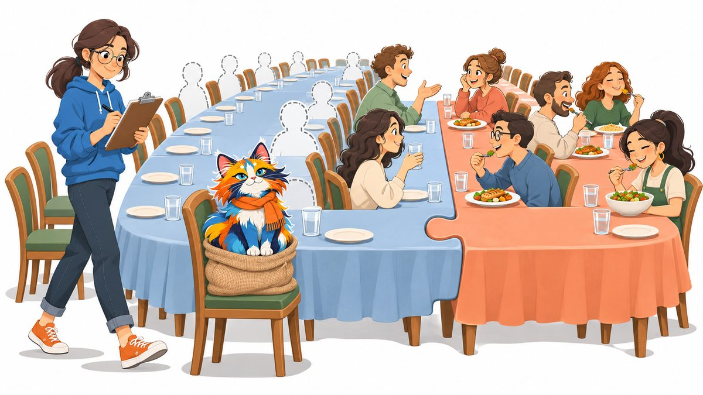

Занятие 5 · блок 5
Кого мы потеряли при join

Метрику «на пользователя» считают по таблице событий. Если склеить назначение с событиями неправильно, из знаменателя пропадают люди без событий — и метрика меняет смысл. Это ошибка выжившего из занятия 2, спрятанная в одном слове SQL.
Задача 6. 4% или 13%?
В тест назначено 100 000 пользователей. В таблице событий за время теста есть 30 000 из них, сделали заказ 4 000. Алиса считает конверсию так: назначения INNER JOIN события → заказавшие / строки. Боб — назначения LEFT JOIN события.
- Какие конверсии получатся?
- Тест ускорил загрузку приложения, и событий «открыл приложение» стало больше. Какой способ покажет выдуманный эффект?
Решение
Шаг 1. Left join: — конверсия назначенных.
Шаг 2. Inner join: — конверсия «активных».
Шаг 3. Кто попал в события, зависит от поведения, а поведение меняет тест. Быстрая загрузка добавила в события малоактивных людей: знаменатель «активных» растёт быстрее заказов, и конверсия активных может упасть, хотя заказов стало больше. Или наоборот.
13.3% при inner join против 4% при left join. Правильный знаменатель — все назначенные: их состав тест не меняет. Inner join покажет выдуманный эффект.
Полная популяция эксперимента
Знаменатель метрики «на пользователя» — все назначенные в группу, включая тех, у кого нет ни одного события: у них метрика 0.
- Нет лога назначений? Разбиение детерминировано, поэтому пересчитывается для всей популяции, которая могла попасть в тест. Проверка восстановления — SRM на восстановленных группах.
- Ratio по событиям : пользователи с ничего не добавляют — там inner и left join дают одно число.
Дополнительная задача — если останется время
Задача 7. Витрина в «Десертах»: разбавление
Новую витрину видят только гости, открывшие раздел «Десерты», — 10% всех. На них выручка выросла на 6%, на остальных эффекта нет.
- Какой эффект увидим, если считать по всем пользователям теста?
- Во сколько раз дольше придётся ждать, чтобы поймать эффект «по всем», чем «по открывшим»? Разброс метрики считай одинаковым.
- Какое число нести в бизнес-кейс?
Решение
Пункт 1. .
Пункт 2. Нужное растёт как : эффект в 10 раз меньше — пользователей нужно в 100 раз больше. Но «всех» набирается в 10 раз быстрее, чем открывших, — итого в 10 раз дольше.
Поэтому анализируют триггерную часть: тех, кто дошёл до места изменения в обеих группах; в контроле логируют «увидел бы».
0.6% по всем; ждать в ≈ 10 раз дольше, поэтому анализируют триггерную часть. В бизнес-кейс — разбавленные 0.6%: раскатка поднимет всю выручку на 0.6%, а не на 6%.
Подписчики тратят на 40% больше
В тесте группе B показывали предложение подписки. Отчёт: «Оформившие подписку тратят на 40% больше остальных — подписка работает!» А сравнение «вся группа B против всей группы A» дало разницу около нуля. Чему верить?
Ответ
«Оформившие против остальных» — уже не эксперимент: подписку оформляют те, кто и так тратил больше. Честная оценка — по назначению: все, кому показали, против всех в контроле, даже если большинство не нажали.
Так было и в медицине: в Иллинойсе в 2016–2018 годах оздоровительную программу для сотрудников назначили по жребию. По жребию эффект на расходы и здоровье — около нуля, а «записавшиеся против незаписавшихся» внутри той же компании дали большой «эффект»: записывались те, кто и так был здоровее.
Верим сравнению по назначению, ≈ 0: оформившие сами себя отобрали.
Дополнительно — если останется время
Время до второго заказа
Тест длится две недели. Метрика — «среднее время до второго заказа» по тем, кто успел сделать второй заказ. В тесте 4.1 дня, в контроле 5.3. Это ускорение?
Ответ
Не обязательно. Это цензура: у многих второй заказ ещё не случился, а среднее по случившимся занижено — в выборку попали только быстрые. Если тест чуть иначе отбирает, кто успел, разница появится и без ускорения. Честнее — доля сделавших второй заказ за фиксированные 7 дней от первого, для тех, кто пришёл не позже чем за 7 дней до конца теста.
Знаменатель — все назначенные
Метрика на пользователя — по всем назначенным: left join, нули включены. Inner join по событиям отбирает выживших, а тест может изменить, кто выжил. Сравнивают группы по назначению, а не «сделавших» с «не сделавшими».